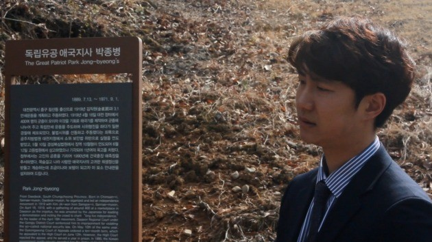
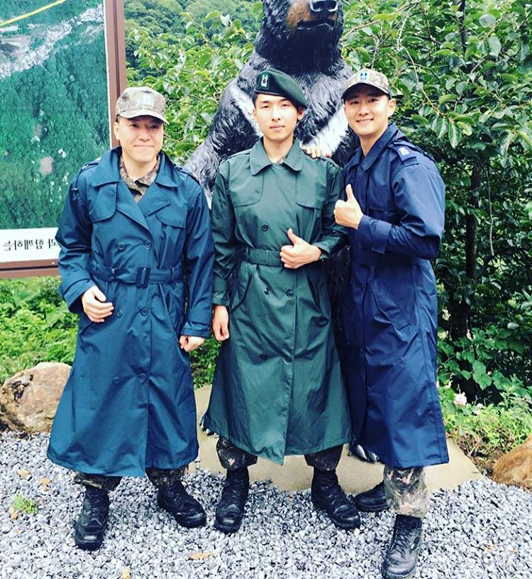
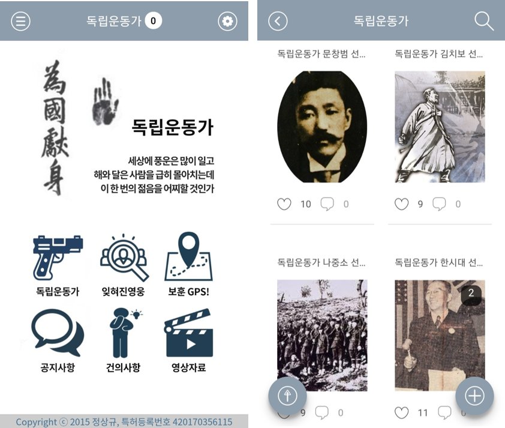
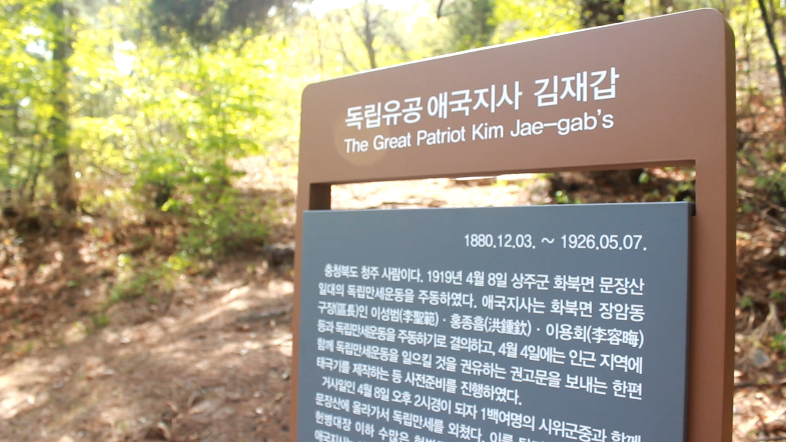
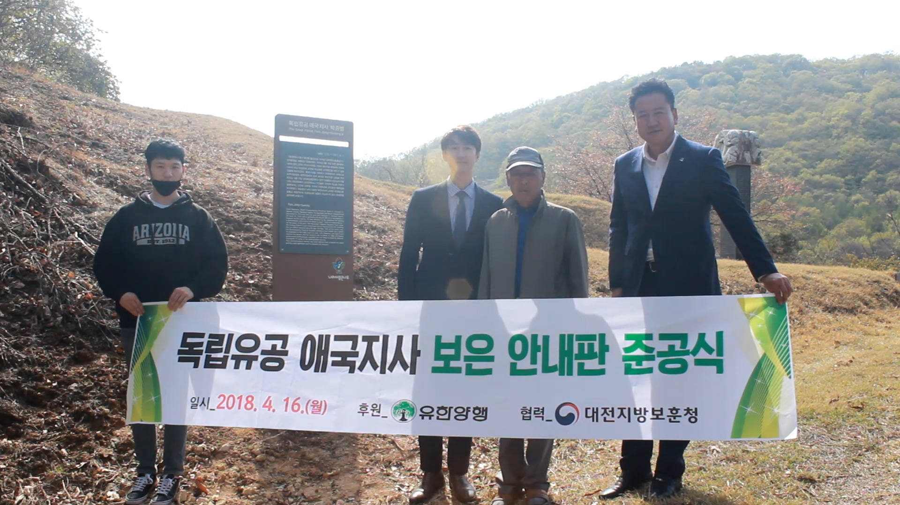

>독립운동가 묘소 앞에 선 정상규 작가
‘독립운동가’라는 휴대전화용 어플이 있다. 독립운동가의 서거일 때다 푸시 알람을 보내줄 뿐만 아니라, 우리에게 잘 알려지지 않은 독립운동가 약 200명에 대한 소개를 담고 있다. 또 ‘보훈 GPS’ 기능을 통해 이용자의 현재 위치를 기반으로 독립운동가의 기념관, 생가, 유적지를 알려주기도 한다. 이 어플의 개발자 정상규(33, 작가 겸 사회운동가) 씨는, “독립운동가 300만 명 중, 등록되어 있는 분은 0.05%밖에 되지 않고, 그나마 교과서에 실린 분들은 채 25명이 되지 않는다”면서, “같은 독립운동을 했어도 좌익이었거나, 신분이 낮은 사람들은 지금까지도 인정을 받지 못하고 있다. 이런 분들의 한을 풀어주고 싶다”고 말했다. 정상규 씨는 ‘독립운동가’ 어플을 통해 나라를 위해 목숨을 바쳤음에도 우리가 기억하지 못하는 분들을 기리고자 노력하고 있다. 그뿐만 아니라 독립유공자 명패를 달아주는 크라우드 펀딩, 대전시 보훈청과 함께 지역 독립운동가 묘소에 위패를 달고 도로 위 안내표지판을 설치하는 프로젝트 등을 진행했다. 그가 이렇게 사이버 공간에서, 그리고 독립운동의 흔적이 남아있는 현실의 장소를 지키고 보존하려는 이유는 무엇일까.
정상규 씨는 ‘독립운동’에 관심을 기울이게 된 계기가 특별한 것이 아니었다고 말했다. “제가 지금까지의 삶에 있어서 한 모든 선택들은 결국 한 방향, ‘세상을 얼마나 이롭게, 또 따뜻하게 만들 수 있는가’라는 기준을 향해왔던 것 같습니다. 즉 사익보다는 공익을 추구하는 선택들이 지금의 제 삶을 이룬 것 같습니다.” 정상규 씨는, 미국에서 학부 시절을 보낼 때는 NGO와 사회적기업을 설립하기도 했다. 특별히 역사에 흥미가 생긴 것은 우리나라가 앞으로 지속할 수 있으려면 반드시 ‘뿌리’에 대한 이해가 선행되어야 한다는 생각 때문이었다고 말했다.

> 군 장교 복무시절의 정상규 씨와 동기들. 왼쪽부터 김좌진장군 증손자, 이진규 지사 증손자, 정상규 씨.
“한국에 들어와서 공군 장교 생활을 하던 당시 지원자가 많지 않아 최전방에 배치되었는데, 그곳에서 독립운동가의 후손들을 동료로 만나게 되었습니다. 그 친구들의 이야기를 들으면서, 역사는 단순히 암기하는 것이 아니라 우리 할아버지들의 이야기라는 것을 알게 되었고, 우리나라가 세계에서 인정을 받으려면, 또 우리나라 국민들의 시민의식 함양을 위해서는 반드시 역사가 필요하다는 생각을 하게 되었습니다. 자신의 뿌리에 대한 제대로 된 이해가 있어야 된다는 것이죠. 우리가 지금 자유민으로 살아갈 수 있었던 것은 다 조상들의 투쟁이 있었기 때문이라는 것을 이해하고, ‘내가 열심히 사는 것’으로 끝나는 것이 아니라, 사회와 세상에 기여하며 사는 것, 결국 이것이 의미가 있다고 생각합니다.”
그가 ‘독립운동가’ 어플을 만들면서 가장 힘들었던 것 중의 하나는 심적인 문제였다. “독립운동가 한분 한분의 자료를 직접 찾아서 정리했는데, 그 과정이 심적으로 특히 많이 힘들었습니다. 독립운동가분들의 이야기가 결코 밝고 즐거운 이야기가 아니었기 때문에 그 어렵고 지난한 투쟁의 과정을 보면서 우울증 증상같이 심적으로 어려움이 있어 일주일 간 작업을 중단하기도 했습니다.” 하지만 주변 사람들이 ‘역사에 대해 토론할 수 있는 커뮤니티가 있었으면 좋겠다’고 하는 격려의 말에 그는 다시 마음을 다잡을 수 있었다. 그렇게 직접 프로그램 개발을 배우고, 5개월이 걸려 어플을 완성하자 또 다른 문제가 찾아왔다. 안보를 우려한 정부 기관에서 좌익 계열의 독립운동가를 삭제하라고 연락해 온 것이다. 하지만 그는 이를 거부했다. “독립운동가들을 ‘평가’하려고 한 것이 아니라, 있는 사실 그대로를 담으려고 한 것이기 때문에 이 요청을 받아들일 수 없었습니다” 결국 ‘독립운동가’ 어플은 2015년 12월 처음 출시된 이후 현재 23만 명의 회원이 등록되어 있다. 하지만 그는 자신이 처음 어플을 만들 때 약속했던 것처럼 어떠한 상업 광고도 싣지 않고 있다. 그는 “회원 수가 많은데도 아무 광고를 싣지 않는 어플로는 유일할 거라고 생각합니다. 한 달에 7~8만 원씩 들어가는 어플 관리 비용이 쉬운 것은 아니지만, 한 달에 치맥 몇 번 안하면 된다고 생각하고 사비로 충당하고 있습니다”라고 말하며 웃었다.

>'독립운동가' 어플 메인화면
그는 힘든 것이 이상으로 일에 보람을 느낀다며, 자신이 진행했던 프로젝트의 여러 에피소드를 소개했다. 가장 먼저 그는 자신이 만든 어플이 잊혀진 독립운동가를 우리가 기억할 수 있는 매개가 된다는 데에 자부심을 느끼고 있다고 했다. “국가보훈처 법령에는 독립운동가를 수훈해주는 법적 근거가 있는데, 가장 중요한 것은 증거가 될 만한 ‘업적’이 있어야 한다는 것입니다. 하지만 당시 독립운동을 하셨던 대부분의 분들에게는 쉽지 않은 조건입니다. 제가 어플을 만들고 나서, 그 ‘기억되지 못하는’ 독립운동가의 후손들에게 연락이 오기 시작했습니다.” 기억되지 못하고 잊혀져가는 선조들을 위해 독립유공자의 후손들이 나선 것이다. “국가에 독립운동가 등록을 신청하는 절차는 까다롭고 복잡하지만, 저는 자료를 받으면 독립기념관이나 민족문제연구소 등의 기관에 부탁해 제보 확인 절차를 걸쳐 3일 만에 어플에 독립운동가로서 등록을 합니다. 그렇게 사람들에게 기억될 수 있는 것이죠. 비록 국가로부터 독립운동가 유공자 포상은 받지 못하지만, 독립운동가분들과 그 후손의 한을 풀어주는 ‘채널’로서 역할하고 있다고 생각합니다.”
정씨는 대전시 보훈청과 함께 독립운동가 묘소에 위패와 안내 표지판을 설치했던 일도 소개했다. 그는 크라우드 펀딩을 통해 독립운동가 묘소에 위패를 설치하려고 한 적이 있다. 하지만 국가보훈처는 전례가 없던 일이라며 이를 거부했다. 여러 지인들에게 수백통의 메일을 보내는 과정에서 예전에 알고 지냈던 대전시 전(前) 시장과 연락이 닿았고, 당시 대전시 보훈청장과의 회의를 통해 마침내 대전시에 네 개의 위패와 표지판이 설치될 수 있었다. 새로 조례를 만들기까지 하는 등 험난한 과정이었지만, 그 결과물이 참으로 값졌다며 정상규 씨는 뿌듯한 미소를 지었다. 이 과정을 통해 정책과 제도를 통해 많은 것을 바꿀 수 있겠다는 생각에 서울대학교 행정대학원에서도 학업을 시작하게 되었다고 말했다.


> 대전시 보훈청과 진행한 '독립운동가 묘소 표지판 설치' 프로젝트
정상규 씨는 “현충원 안장 묘소와, 전국에 산재되어 있는 독립운동가 묘소를 합치면 4500기가 넘습니다. 상당수는 후손이 끊겼고 관리도 잘 되고 있지 않습니다. 누가 어디에 묻혔는지 위치를 모르는 경우도 많습니다. 안내판을 설치해서 이 묘소가 누구의 것인지, 또 어떤 일을 하셨는지 간단한 소개라도 하고 기억하는 것이 그분들에 대한 최소한의 예우라고 생각합니다. 또한 독립운동가가 이 마을에서 났다는 것은 지역의 자랑거리가 되기도 합니다. 그렇게 기억하고 기리지 않으면 젊은 사람들은 모를 것입니다”라고 말하며 공간 보존에 대한 의지를 다졌다.
내년은 3〮1운동 100주년이자 의열단 설립 100주년이기도 하다. 그는 현재 ‘대통령직속 3.1운동 대한민국 임시정부 수립 100주년 기념사업추진위원회’의 ‘미래희망’ 분과에 들어가 있다. 정상규 씨는 “임시정부는 헌법에 나와 있는 우리나라의 근간이기도 하며, 조상들이 우리의 자유를 위해 희생하신, 민족의 몸부림이라고 생각합니다. 현재 젊은 세대의 문제는 '단절'입니다. 이것을 해결하는 것은 '단결'의 힘이라고 생각합니다.”고 말하며 세대 간의 단결을 위한 문화 컨텐츠 제작을 제안했다. 특히 의열단은 중국 독립운동가와 함께 연합작전을 펼치는 등 중국 측과도 깊은 연관이 있었던 독립운동 단체이니만큼, 의열단 100주년은 중국과의 외교 문제도 풀어갈 수 있는 좋은 기회가 될 것이라고 했다. 정씨는 3.1운동 및 임시정부 100주년을 기념하여 중국에서 활동한 의열단원들의 의복을 재현하는 패션쇼를 아시아모델협회에 제안했으며, 상하이 임시정부 앞에서 한국 모델과 중국 모델이 함께 패션쇼에 서는 프로젝트가 기획 단계에 있기도 하다. 정씨는 자신이 젊다는 것에 희망을 느낀다며, 현재 독립운동사에 관심이 있는 젊은이들이 많지 않다는 사실에 안타까움을 나타냈다. “어플을 처음 만들기 시작했을 때는 현역 군인이었습니다. 당시 나이가 서른이었고, 전역을 앞둔 상황에서 취업 준비생으로서 현실적인 어려움이 있었습니다. 그럼에도 불구하고 어플 개발을 선택할 수밖에 없었던 이유는, ‘이것이 내가 해야 할 일이다’라는 책임 의식이 있었기 때문입니다. 젊은이들이 역사에 관심을 가져야만 희망 또한 물려받을 수 있다고 있습니다.”